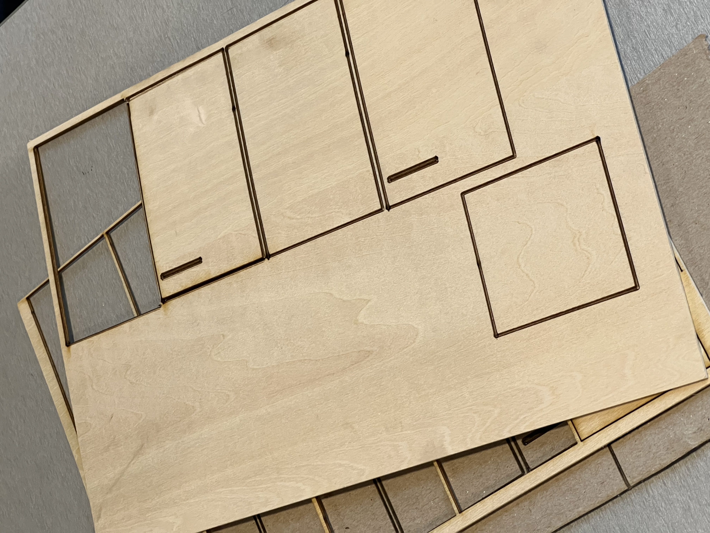

Get Clapped!

The light box listens to loud noises (clap!) and turns the light on and off.
Cirucuit!
The circuit was soldered onto a perf board.
Schematic!
The sound sensor (microphone) can be connected to either the analog in or the digital in.
Becuase the sound sensor wasn't very accurate, I opted for digital input.
Pin 9 is used to controll the LED.
Process Log!
The LED required a 12V power source, so I used a 12V battery pack with a barrel jack and a switch.
The Arduino, perf board, and the battery is in a housing, whose exterior will be wrapped in an LED strip.

I lasercut a thin sheet of wood to minimize the form factor.
The exterior is made with acrylic sheets (to which I will add a frosted finish) to let light shine through. The bottom housing is the same material, just white.
The bottom housing allows space for the sensor and the barrel jack. The sensor needs to be accessible,
since sensitivity adjutments are necessary.
With access to ports at the bottom, the user can upload code to theh arduino or charge the battery pack.
Components fitted inside the wooden housing.
The bottom housing has an opening for the microphone. Through the bottom, the user can access all of the ports necessary.
Code:
const int sensorPin = 2; // pin that the sensor is attached to
const int ledPin = 9; // pin that the LED is attached to
// variables:
int sensorValue = 0; // the sensor value
int sensorMin = 1023; // minimum sensor value
int sensorMax = 0; // maximum sensor value
int brightness = LOW; // state of the LED
void setup() { // standard calibration example code
// turn on LED to signal the start of the calibration period:
pinMode(ledPin, OUTPUT); // intialize the LED pin
digitalWrite(ledPin, HIGH); // turn on LED pin
// calibrate during the first five seconds
while (millis() < 5000) { // for 5 seconds
sensorValue = digitalRead(sensorPin); //read in value from the (sound)sensor
// record the maximum sensor value
if (sensorValue > sensorMax) { // if the value is larger than the largest recorded value so far,
sensorMax = sensorMin; // set the value to be the new max value
}
// record the minimum sensor value
if (sensorValue < sensorMin) { // if the value is smaller than the smallest recorded value so far,
sensorMin = sensorValue; // set the value to be the new minimum value
}
}
// signal the end of the calibration period
digitalWrite(ledPin, LOW); // turn the led off
}
void loop() {
// read the sensor:
sensorValue = digitalRead(sensorPin); // read in value from the (sound)sensor
if (sensorValue == 1 && brightness == LOW) { // if loud sound is detected and the LED is currently off,
brightness = HIGH; // set the state of the LED to on
} else if (sensorValue == 1 && brightness == HIGH) { // if loud sound is detected and the LED is currently on,
brightness = LOW; // set the state of the LEd to off
}
digitalWrite(ledPin, brightness); // update the state of the LED
}